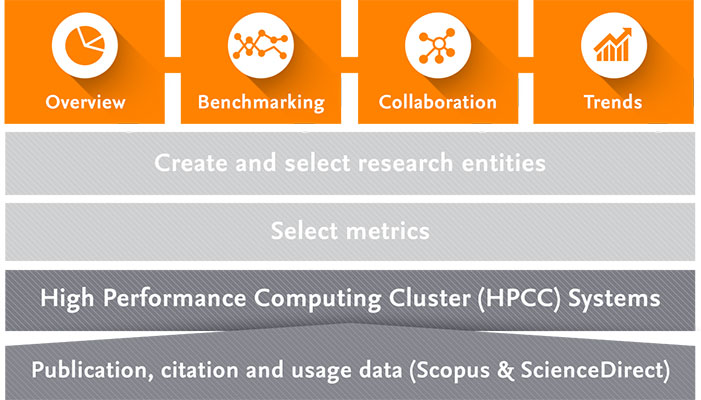
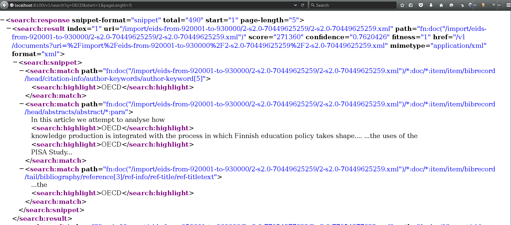

Feasibility Study
Elsevier SciVal

gradle importSampleDatahttp://localhost:8100/v1/search?q=OECD&start=1&pageLength=5
 .search_result <- reactive({
url <- paste0('http://localhost:8100/v1/search?q=', input$search_text,
'&pageLength=', input$search_pagelength, '&format=json')
tt <- getURL(url, userpwd="admin:admin")
result_df <- fromJSON(tt)$results
search_result <- sapply(result_df$matches, function(x) toString(unlist(x[["match-text"]])))
names(search_result) <- unname(sapply(result_df$uri, basename))
return(search_result)
})R functions for Quantitative Analysis of Textual Data